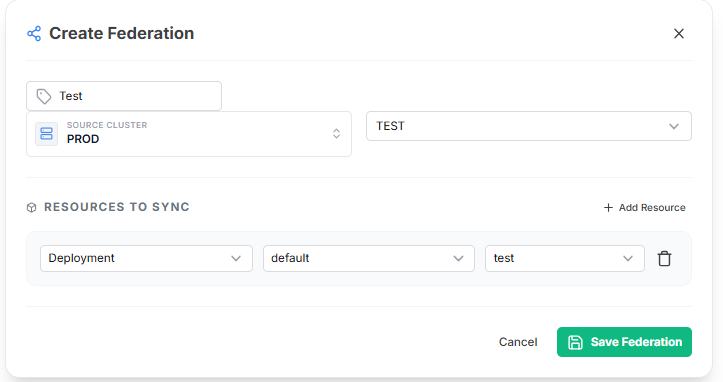
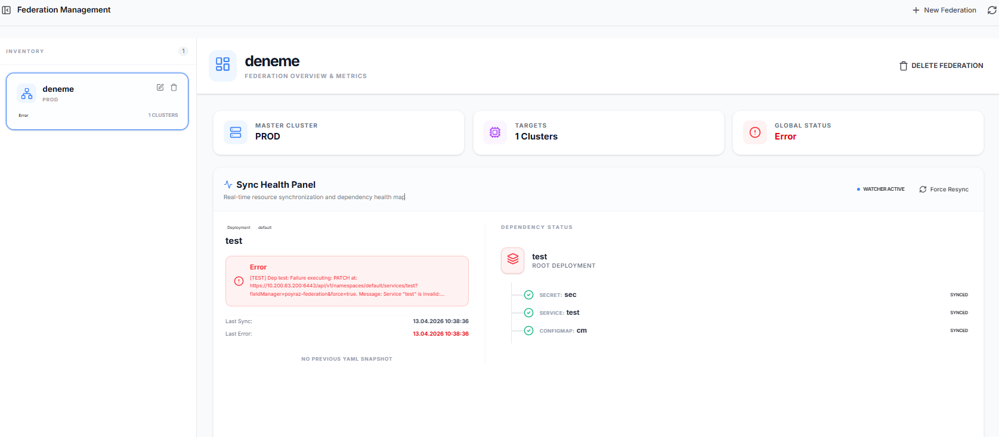

The Federation Watcher
Federasyon Gözlemcisi
The Federation module implements a Source-of-Truth Resource Broadcast pattern. It establishes a master-member paradigm where infrastructure state is synchronously mirrored across distinct K8s clusters effortlessly.
Federasyon modülü, bir Tek Doğruluk Kaynağı Kaynak Yayını pattern'ini uygular. Altyapı durumunun farklı K8s kümelerinde senkronize ve zahmetsiz olarak yansıtıldığı bir master-member (ana-üye) paradigması oluşturur.


genericKubernetesResources API watches applied manifests on the designated Master cluster.genericKubernetesResources API'si, belirlenen Master kümesi üzerindeki uygulanan manifestleri izler.ConfigMapRef, SecretRef, and ServiceSelectors. Broadcsts dependencies *first* to prevent crashlooping.ConfigMapRef, SecretRef ve ServiceSelectors'leri belirler. Crashlooping'i önlemek için bağımlılıkları düzenli olarak *önce* yayınlar.poyraz-federation FieldManager to natively apply state with built-in conflict resolution directly inside the destination K8s API server.poyraz-federation FieldManager kullanır.Architectural Benefits
Mimari Avantajlar
Zero Drift Enforecement
Sıfır-Sapma Dayatması
Any manual modifications made directly in a member cluster are instantly detected as drift and immediately overwritten to match the Master's state.
Bir üye kümesinde (member cluster) doğrudan yapılan herhangi bir manuel değişiklik anında 'sapma' olarak algılanır ve Master kümenin durumuna uyması için anında ezilir (overwritten).
Network Agnostic
Ağ Bağımsızlığı
No specific VPN mesh or internal subnet routing is required. Kubeconfig distribution acts as the only secure tunnel required for broadcasting manifests.
Belirli bir VPN ağı (mesh) veya dahili alt ağ yönlendirmesi (subnet routing) gerekmez. Kubeconfig dağıtımı, manifestleri yayınlamak için gereken tek güvenli tünel görevi görür.